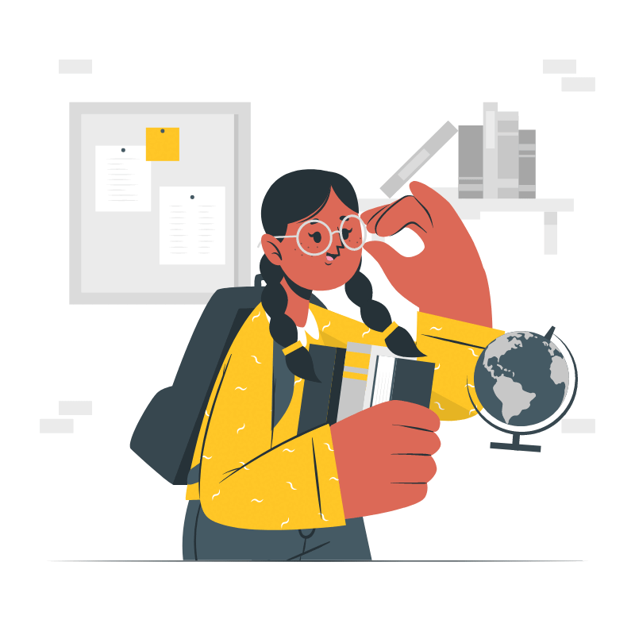

SUMAYA
Sumaya nasce in Italia da genitori bengalesi emigrati anni prima.
Non ha la cittadinanza, ma l’italiano è la sua lingua madre. Parla anche il bengalese, l’inglese e l’arabo.

Frequenta la scuola primaria, è brillante in grammatica e inglese, ed è un punto di riferimento per i compagni di classe.
Sumaya non partecipa alle feste di compleanno, ma partecipa alle attività proposte dalla scuola.

Nonostante non sia mai stata in Bangladesh, racconta sempre della propria cultura e delle usanze, suscitando la curiosità dei compagni di classe.
Al di fuori della scuola frequenta solo bambini della comunità bangladina o gioca con il fratellino più piccolo.
Non svolge attività ricreative e non ha hobby. La domenica va a scuola di arabo e Corano.